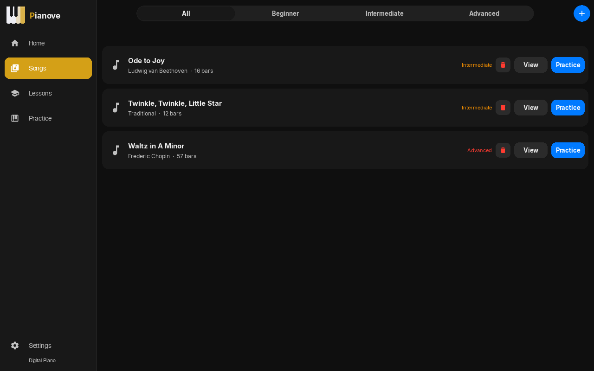
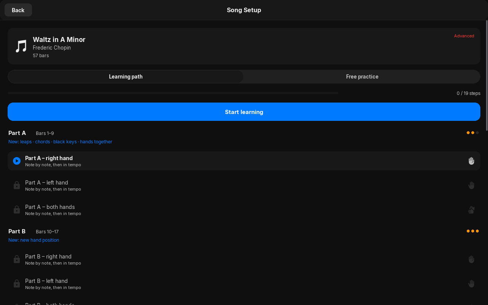

Playing
Songs & Learning Path
Import a piece and Pianove turns it into a path of small steps, from the first bars to the whole piece.
Your song library
The Songs tab lists every piece you imported, with its composer, length and difficulty, which Pianove rates from the range, chords and hand movement. Filter by difficulty at the top, press + to import, View to read the score and Practice to learn it.

The learning path
Pressing Practice opens the song's page. Its Learning path cuts the piece into parts of about twelve beats and lists what each part brings for the first time: chords, black keys, leaps, a new hand position, faster notes, hands together.

For every new part you learn:
- The right hand, note by note, then in tempo.
- The left hand, the same way.
- Both hands together.
Every two parts are then joined and played in tempo one after the other, and the path ends with the whole piece. A part that repeats an earlier one is not learned twice; one that is nearly the same only gets a short step for the variation. Each step can earn up to three stars, and the next step unlocks when you finish the one before.
Free practice
Switch to Free practice to play the whole piece your way: choose the right hand, left hand or both, then Practice (the music waits for you) or Play along (in tempo after a count-in). With Beta Features on there is also Listen, which plays the piece to you.
Reading the score
View shows the full score, typeset by PyLute: title and composer, grand staff, beams, chords, accidentals and ties, page by page.